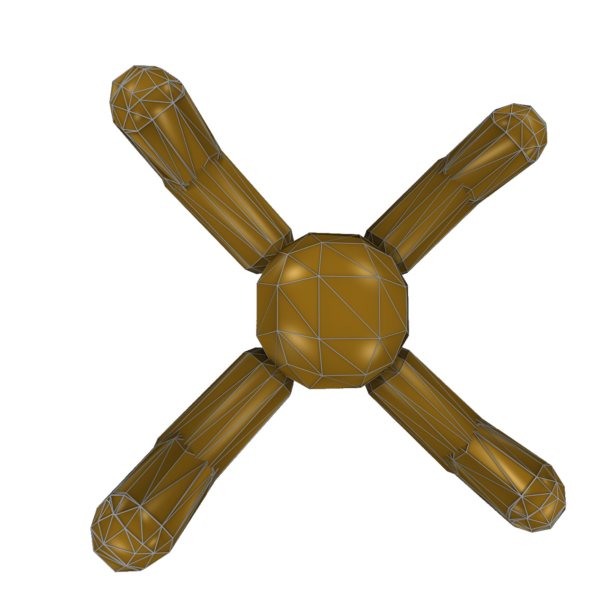
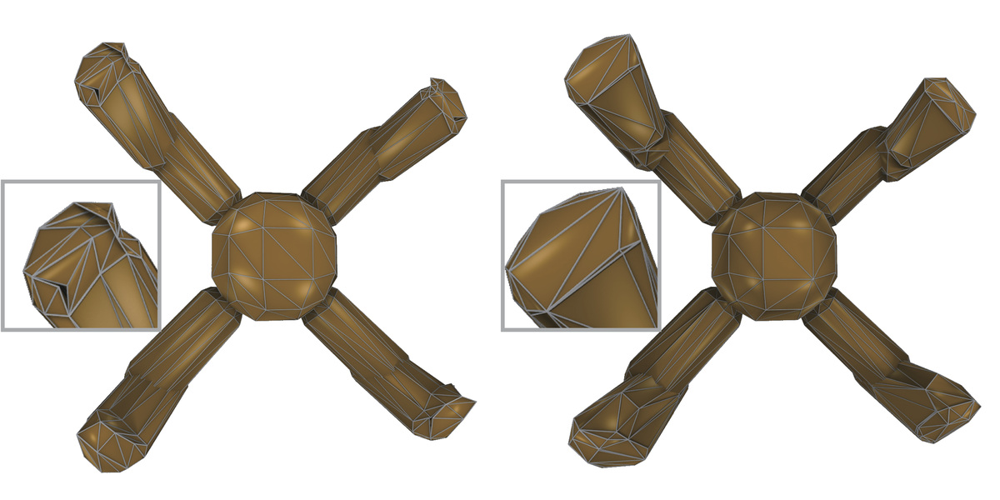
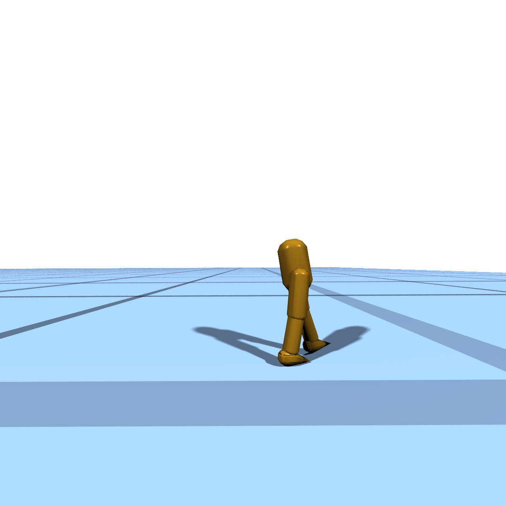
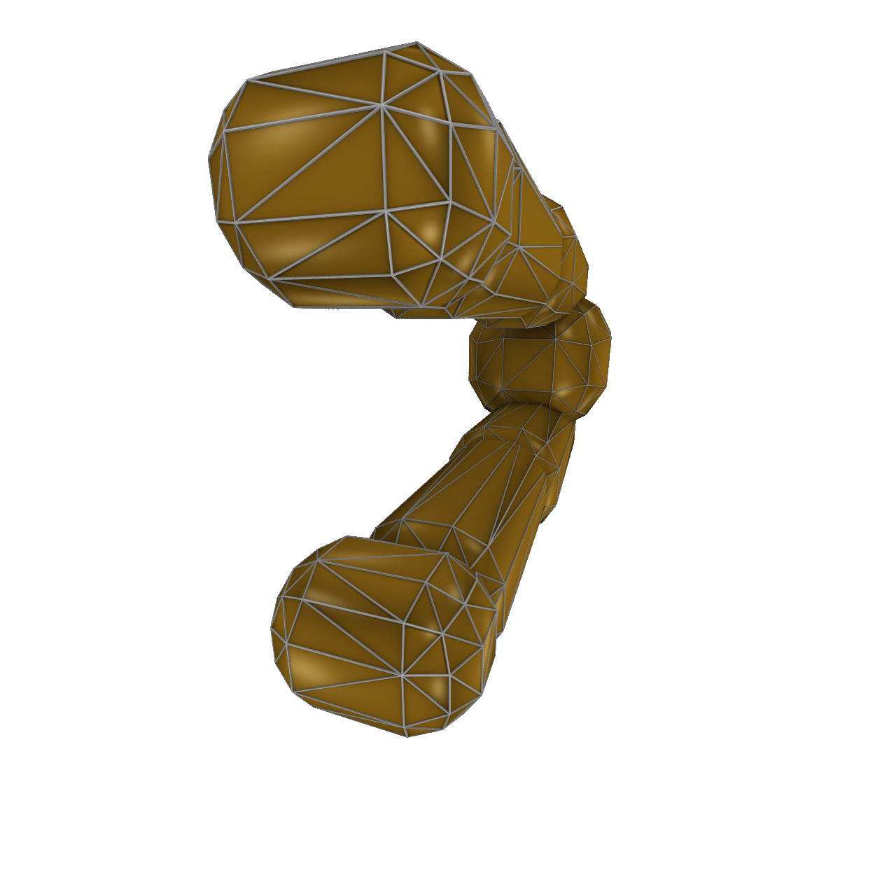
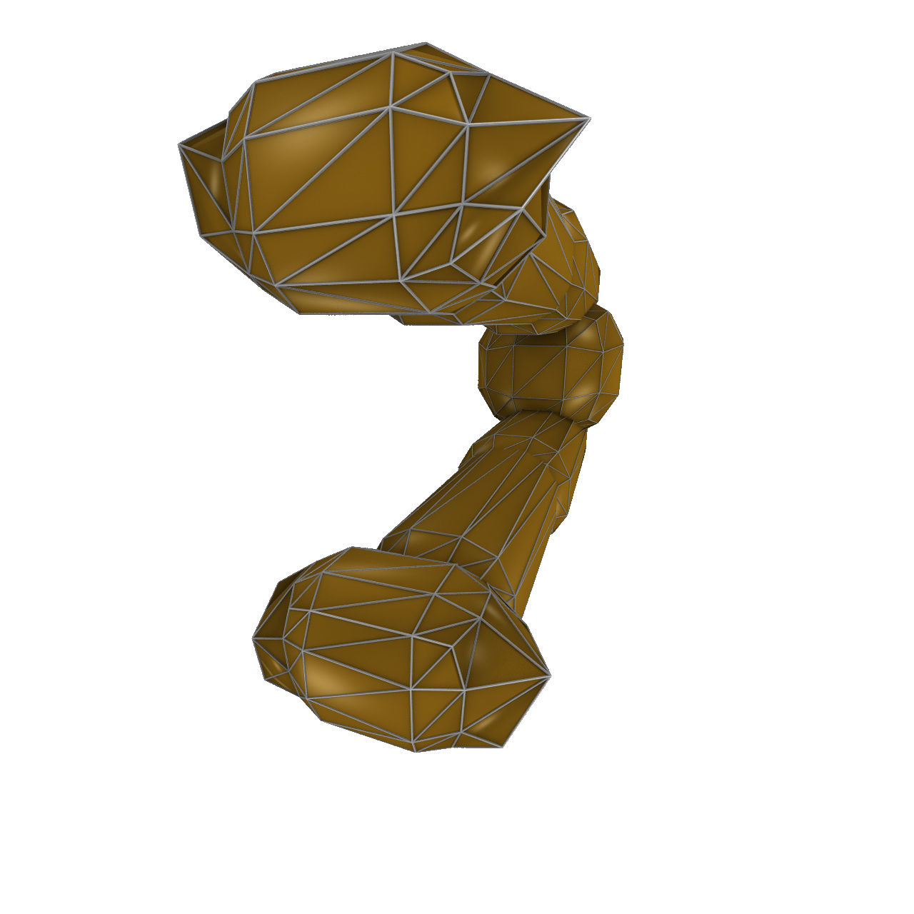
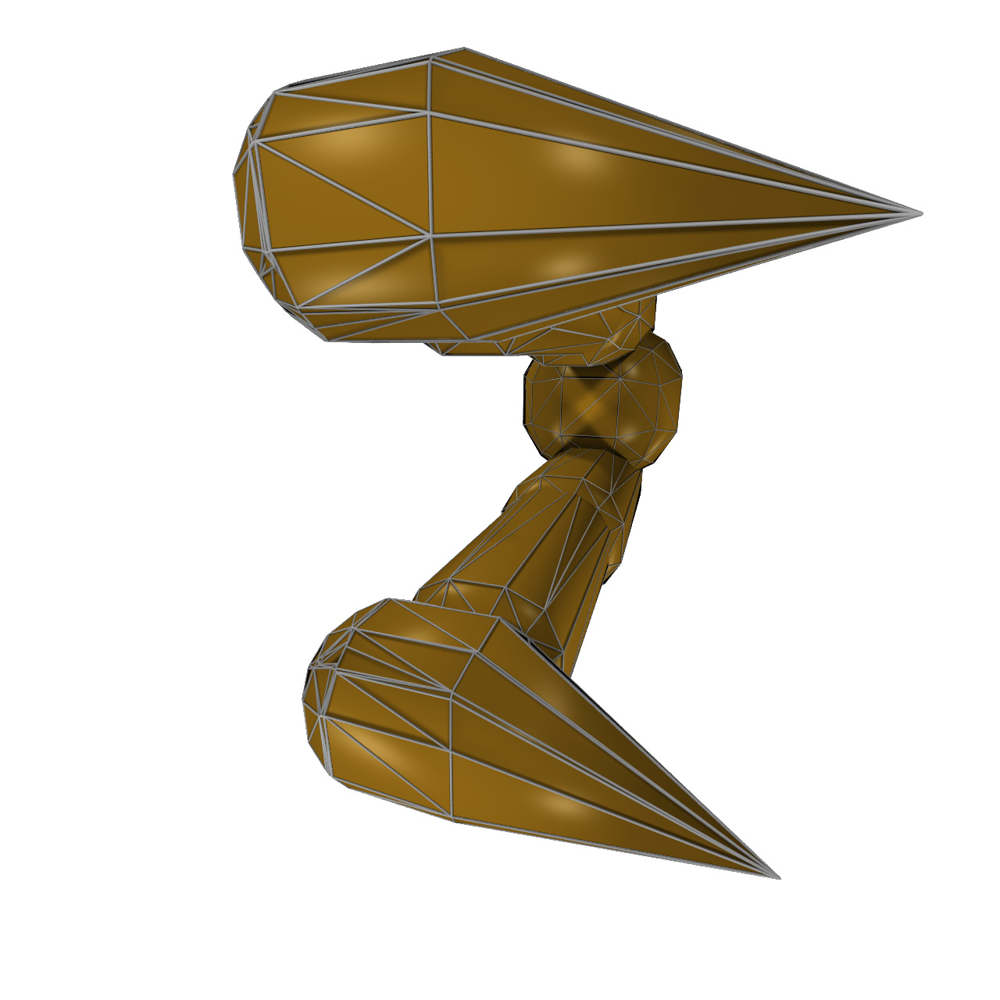
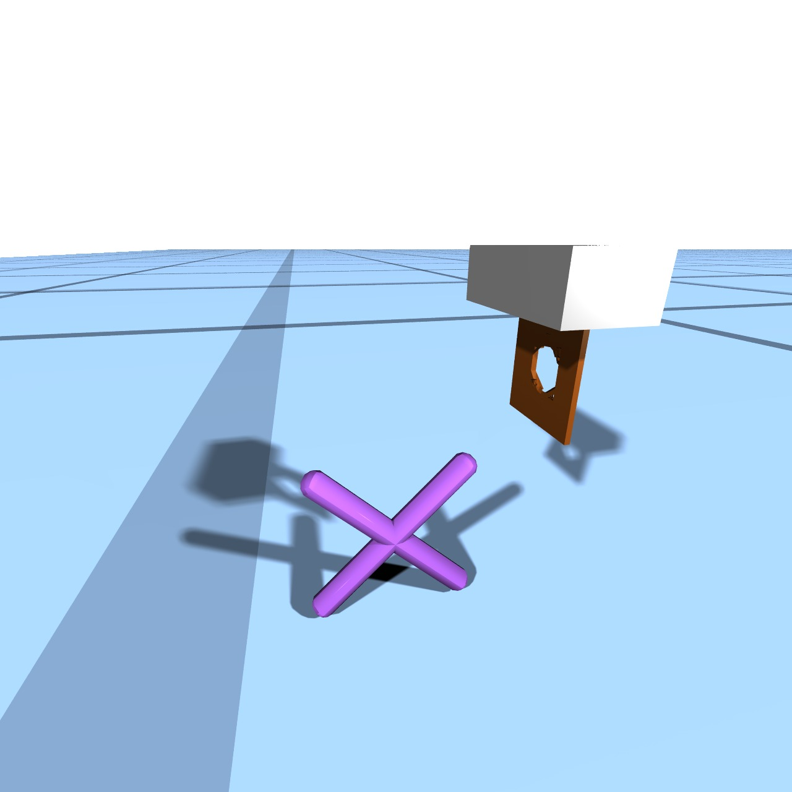
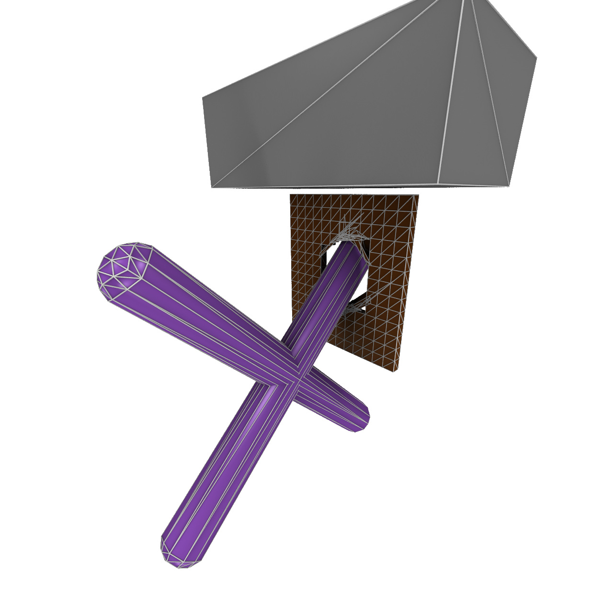
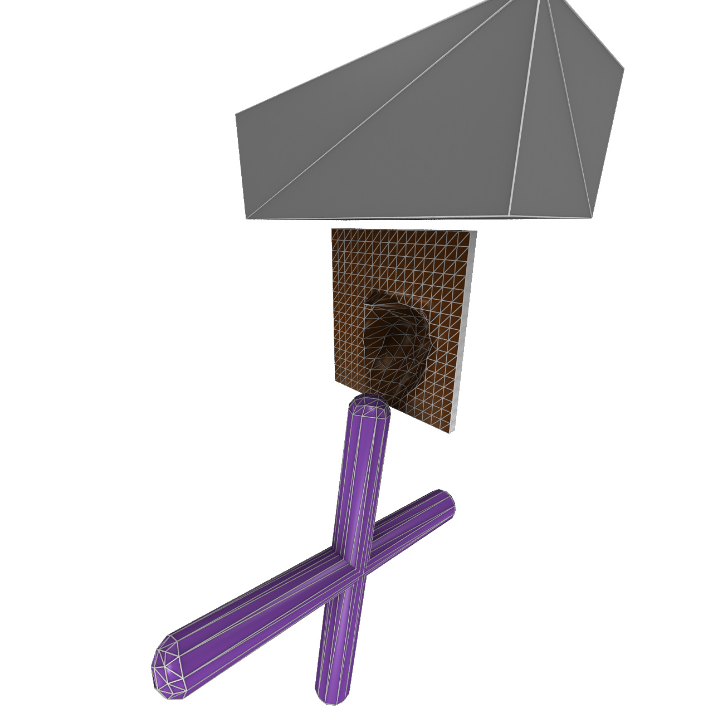

Abstract
Robot simulators are indispensable tools across many fields, and recent research has significantly improved their functionality by incorporating additional gradient information. However, existing differentiable robot simulators suffer from non-differentiable singularities when robots undergo substantial shape changes. To address this, we present the Shape-Differentiable Robot Simulator (SDRS), designed to be differentiable under significant robot shape changes. The core innovation of SDRS lies in representing robot shapes using a set of convex polyhedrons. This representation allows smooth, penalty-based contact mechanics for interactions between any pair of convex polyhedrons. Using the separating hyperplane theorem, SDRS introduces a separating plane for each pair of contacting convex polyhedrons and treats it as a zero-mass auxiliary entity whose state is determined by the principle of least action. This setup enables global differentiability even as robot shapes undergo significant geometric and topological changes.
Results
Task 1: Spider Leg Shape Optimization


Task 2: Bipedal Robot Foot Optimization




Task 3: Single-Jaw Gripper Topology Optimization



Citation
@article{ye2025sdrs,
title={SDRS: Shape-Differentiable Robot Simulator},
author={Ye, Xiaohan and Gao, Xifeng and Wu, Kui and Pan, Zherong and Komura, Taku},
journal={IEEE Transactions on Robotics},
year={2025}
}